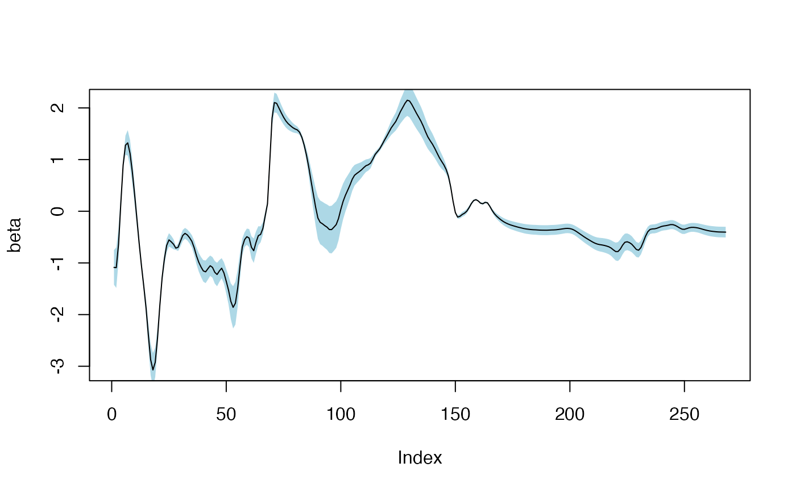

Returns the variance-covariance matrix of the coefficients of a Principal Component Regression.
Usage
# S3 method for class 'mvr'
vcov(object, ncomp, ...)Examples
data(yarn)
yarn.pcr <- pcr(density ~ NIR, 6, data = yarn)
vc <- vcov(yarn.pcr, 3)
# Standard error of coefficients
se <- sqrt(diag(vc))
beta <- coef(yarn.pcr, ncomp = 3)
# Plot regression coefficients with two standard errors shading.
plot(beta, type = 'l',
panel.first = polygon(x = c(1:268, 268:1),
y = c(beta+2*se, rev(beta-2*se)),
col = 'lightblue',
border = NA))
